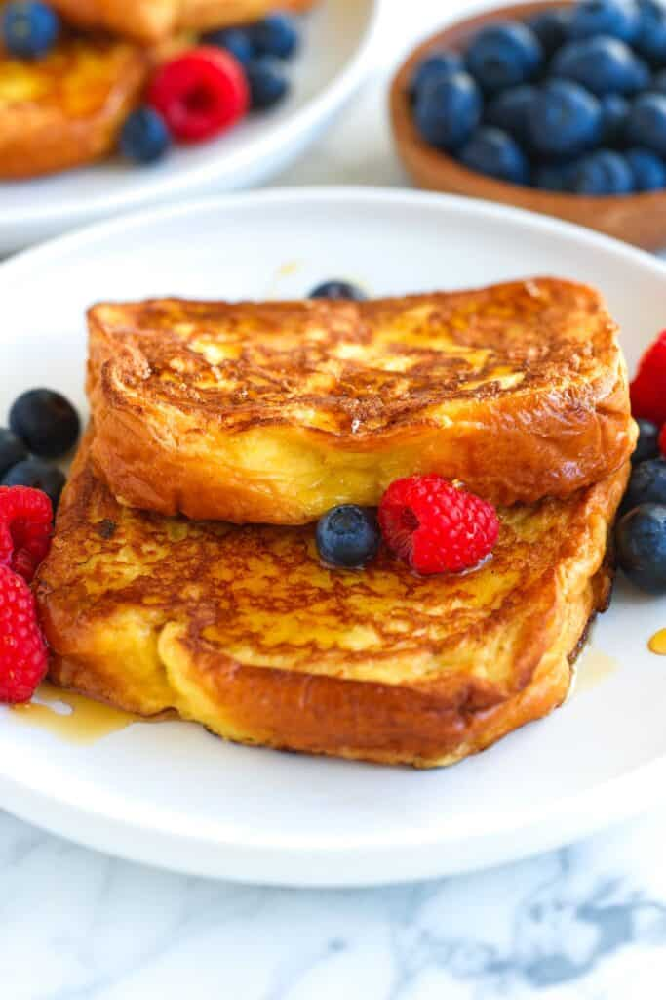

French Toast

This classic French toast has been a weekend tradition in our family for years. While we’ve tried many French toast recipes, we’ve always come back to this one. It’s simple and so delicious.
Ingredients
- Bread
- Eggs
- Milk
- Cream
- Vanilla
- Butter
Steps
- Heat oven to 200°F (93°C). Line a baking sheet with aluminum foil. Slide the baking sheet into the oven. It is best to make French toast in batches. The warm oven helps keep cooked batches warm while the rest finish cooking.
- Whisk eggs, milk, cream, vanilla extract, and a pinch of salt together until well blended.
- Line bread slices up in a large baking dish (it is okay if they overlap). Pour egg mixture over bread slices, then flip and move them around the egg mixture. Move the bread around the egg mixture until the bread has soaked it all up.
- Melt a tablespoon of butter in a heavy, large pan or griddle over medium-low heat. Working in batches, transfer a few slices of the soaked bread to the pan and cook until golden brown and cooked through, 2 to 3 minutes on each side.
- Transfer cooked French toast to a warm oven while you cook the remaining bread slices. Add additional butter as needed for each batch.
Back To Main